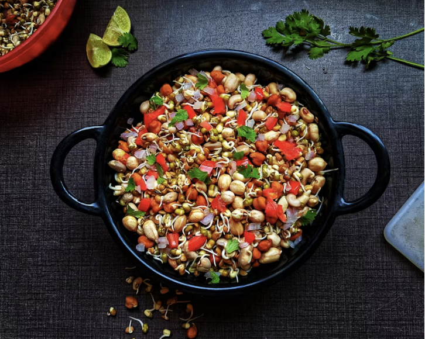

Recipe List
Edamame Bean Salad

Description
This salad was found online. It is delicious, and can be flavored to your preference. Great side or meal for spring & summer.
We usually forget about it during the colder months, and then are pleasantly surprised when we remember it again.
1 tsp sugar
3/4 tsp salt
5 Tbs red wine vinegar
2 limes, juiced
3 Tbs grapeseed oil
1/3 cup cilantro, chopped
2 cloves garlic
1 lb pack frozen shelled edamame
3 cups frozen corn kernels
1 or 2 red peppers, chopped
4 green onions, thinly sliced
1 can black beans, drained & rinsed
2 4oz cans green chilies
Steps
Whisk together red wine vinegar, grapeseed oil, cilantro, lime juice, sugar, salt & garlic in large bowl. Set aside.
Bring large pot of water to a boil
Add edamame & boil 3 minutes
Add corn & continue boiling 1 more minute
Drain well & pour into bowl with dressing
Gently mix in peppers, green onions, green chili & black beans
Cover & refrigerate at least 2 hours before serving